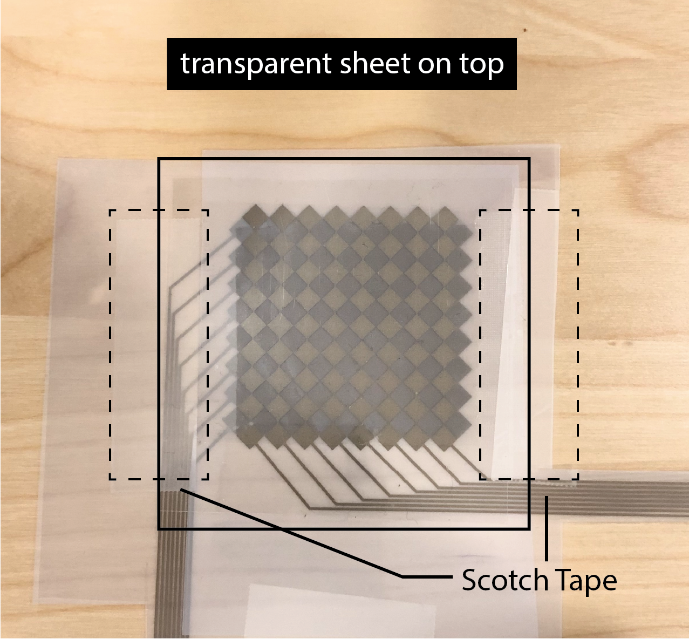
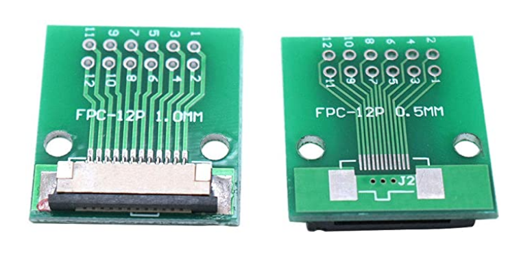
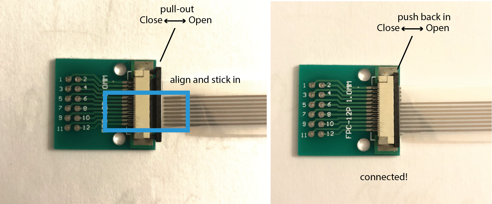
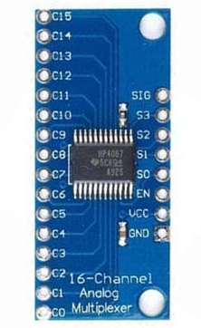
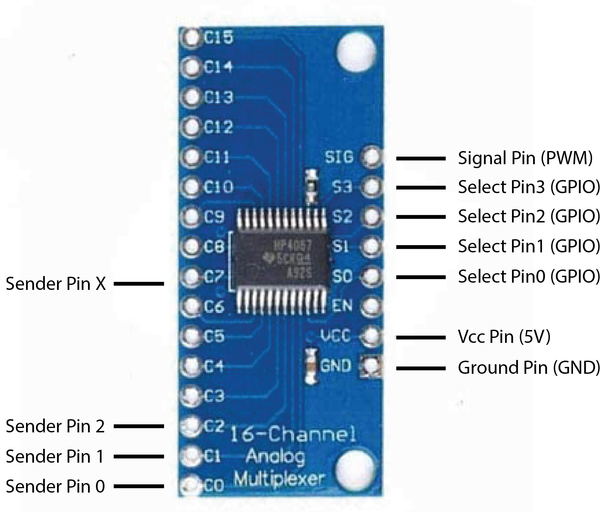
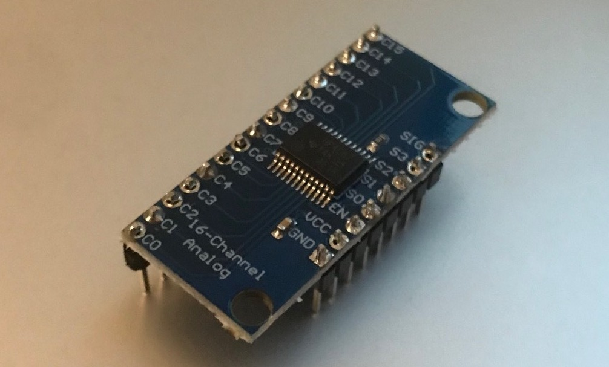

6.810 Engineering Interactive Technologies (fall 2021)
Pset2: Assembling the Multi-Touch Pad and Circuit
In this problem set, you will print out your multi-touch pad on the conductive inkjet printer and assemble the top and bottom layer together. After this, you will build the touch sensing circuit and connect your multi-touch pad to it. As part of building the circuit, you will also have to solder some of the components with header pins first. At the end of this problem set, you will download a piece of test code that will verify that you assembled your multi-touch pad and the corresponding circuit correctly, i.e. the test code will verify that your hardware can sense touch data from a user's finger.
Steps:
- Inkjet Print Top and Bottom Electrode Layers
- Assemble Top and Bottom Electrode Layers
- Connect Top and Bottom Electrode Layers to FCP connectors
- Build Multi-Touch Sensing Circuit
(1) Inkjet Print Top and Bottom Electrode Layers
Once the TAs have verified the two fabrication files (.pdfs) you generated in pset1, you can print them out.
You need to print two sheets, one for the columns and one for the rows.
If you don't remember how to print, you can find information here (add link).
(2) Assemble Top and Bottom Electrode Layers
To assemble both sheets together, please ask a TA to help you with this either in lab or in an OH.
Conductive side should face upwards: First, check that both of your sheets have the conductive side facing upwards.
Align both electrode sheets: Next, align both electrode sheets on top of each other.
The alignment between the top and bottom electrodes is critical for receiving an accurate sensing signal.
Attach tape to maintain alignment: To help maintain the relative alignment, we will tape the two sheets together on one side using regular scotch tape.
Flip top sheet over: Flip the top layer up, so that the bottom layer is exposed and we can apply glue in the next step.

Glueing with tape vs. tattoo transfer paper: While you could use simple double-sided transparent tape for glueing the sheets together, the tape has a certain thickness to it. This is a problem because more space between the electrode layers results in worse sensing. The electrodes are already spaced out by the thickness of the sheet on which the electrodes were printed, so the tape would add even more thickness to it. To keep the glue layer as thin as possible, you will instead use the adhesive of temporary transfer paper.
Using the tattoo transfer paper to glue top and bottom sheet together: Ask a TA to give you the tattoo transfer paper and help you with this step. Pull off the protective cover from one side of the tattoo transfer paper, then attach the now exposed sticky side of the tattoo transfer paper to the bottom electrode sheet to cover all the electrodes (no need to cover the wires). Next, remove the second protective cover from the other side of the tattoo transfer paper to reveal the second sticky side. Now flip back the top electrode layer to make everything sticks together (check your electrode alignment one more time before you do this).

Protecting the top sheet with a transparent cover: Finally, since the conductive side of the top sheet is facing towards the user, the top electrodes are still exposed and you need to cover them up to prevent the user from touching them directly. For this, you will add a transparent film on top, which we will also give you in lab/at the OH. You can attach the transparent sheet by using scotch tape again.

Laminating the Multi-touch pad: to come once we figured out the lamination step. this may also replace the top cover step from above. to come once we figured out the lamination step. this may also replace the top cover step from above. to come once we figured out the lamination step. this may also replace the top cover step from above.
(3) Solder and Connect the FPC Connectors
Once you have the multi-touch pad printed and assembled, you need to connect its inkjet printed wires to a breadboard so it can work with the rest of the circuit.
FPC connectors: In the labs, we used crocodile clamps to connect our inkjet printed circuit to a breadboard but for the multi-touch pad, the wire spacing is so tight that crocodile clamps will not work here. A component that is more suitable for our purposes is a Flexible Printed Circuit (FPC) Connector. The FPC connector has high resolution connectors on one side, which we will use to connect to the inkjet printed circuit, and on the other side has more widely spaced connectors, which we can use to connect to our breadboard. We bought these FPC connectors here.
Soldering header pins onto the FPC connectors: You have two FPC connectors, one for the top and one for the bottom electrodes. Since they don't have the header pins on them yet, you need to solder them on yourself. You have some header pins in your fabrication bag for this.


Cut out area around multi-touch wires for FPC connection: The multi-touch pad wires will need to fit into the FPC connector. Thus, you need to cut out some free space around the wires on your multi-touch pad. When you cut out the area for the connector pay extra attention that it will fit inside the FPC connector. Check that the little pins inside the FPC connector head align with the wires of your multi-touch pad.


Connecting the FPC connectors to the wires of the multi-touch pad: When you connect your FPC connector, make sure the conductive side with the silver traces is facing towards the breakout board. Pull out the little tab on the FPC connector, then insert the wires, then push the little tab back in to secure the wires. Once you are done connecting one side of the multi-touch pad, repeat the procedure with the other side and connect it to the second FPC connector.

(4) Build Receiving Circuit
As mentioned in lecture, the multitouch pad consists of sender electrodes (e.g., columns) and receiver electrodes (e.g., rows). A signal is injected into the sender electrodes and the receiver electrodes then pick up the signal and any modulation of it that occured because the user's finger is present. We will first build the receiving circuit.
Circuit for Receiving: As you can see in the schematic, the circuit for receiving is very similar to what we have done in lab. Each touch-sensing row is connected to its own resistor and then connected to an ADC/TOUCH pin on the microcontroller.

Using a separate ADC component: Unfortunately, the ADC/TOUCH pins on the ESP32 are not reliable enough for our purposes, i.e. they do not output clean enough signals for our multi-touch pad (footnote 1). We will thus use a separate ADC component that will replace the ADC pins on the ESP32. The component we use to have better ADC channels is the MCP3008 chip and you can find its datasheet here.

Connecting the Receiving Electrodes to the ADC component: Let's first connect the receiving electrodes from our multi-touch pad to the ADC component by connecting them to channel 0 - 7. Don't forget to add the 100kOhm resistor to each electrode row.
Powering the ADC component: Next, power the ADC component by connecting the Vdd pin to 3.3V and the Dgnd pin to GND.
Reference Signal: The MCP3008 chip also needs a reference voltage to calculate the unknown voltage from the incoming CH0-7 pins (ADC conversion). This reference voltage needs to be equal or less than the operating voltage of the ADC component. Since we use 3.3V on Vdd, you can connect the reference voltage pin VRef pin to 3.3V as well and then connect the AGND pin to ground.


Connecting the ADC component to the ESP: Sending data from the ADC component to the ESP is a little more complicated. The MCP3008 chip communicates with the ESP via the Serial Peripheral Interface (SPI). We use basic SPI between one master (ESP) and one slave (MCP3008 chip). SPI communication is setup via 4 types of pins, i.e. MOSI is the line for the master to send data to the slave, MISO is the line for the slave to send data to the master, SCK is the line for the clock signal that determines how fast bits of data can be send, and NSS/CS is a line for the master to select which slave to send data to. The ADC chip uses different names on its pinout for these pins, i.e. MOSI (DIn), MISO (DOut), SCK (CLK), and NSS/CS (CS/SHDN) as shown above in the MPC chip pinout. The ESP uses the regular names as shown on the ESP pinout below. Wire up these four SPI pins between the ADC chip and the ESP.

anything students can test here to see if they did it correctly or do we do this at the very end?
(5) Build Sending Circuit
Next, we will build the sending circuit that injects a PWM signal into the sender electrodes. When powered, the multitouch pad is sending the PWM signal to the sender electrode columns one by one, i.e. first sends the PWM signal to the first sender electrode column, then the second, then the third and so on. After it reached the last sender electrode column, it continues again from the front.
Number of Sender Pins: Since we need to send a PWM signal to each column of electrodes individually one after another, sharing a single PWM sender pin like we did in lab does not work since it would send a signal to all electrodes simultaenously at the same time. To send a PWM signal one by one to each column, we thus need the same number of sender pins as we have columns. While we have enough GPIO/PWM pins on the ESP for our 8x9 multi-touch pad (i.e. 17 in total, 8 for receiving and 9 for sending), we would quickly run out of pins if we used a multi-touch pad with a higher resolution. We thus want to introduce a new component, i.e. a multiplexer, that allows you to scale up the number of pins you have available by reducing the number of ESP pins needed to send the signals. You could also use a multiplexer on the receiving side to have the same benefit.

Using a Multiplexer to Scale up the Number of Sender Pins:
A multiplexer can either take multiple inputs and direct them to a single output (multiplexing) or a single input and direct it to one of multiple outputs (de-multiplexing).
Below we show the working principle of a 1-to-3 channel de-multiplexer (take one input and output to multiple pins) for your reference.

Thus, we could use the multiplexer to reduce the number of receiver pins by using it as a multiplexer and combining multiple rows into one pin on the ESP. Similarly, we can use the multiplexer to reduce the number of sender pins by using it as a de-multiplexer and using a single pin on the ESP to send a signal to multiple columns.
For the purpose of this pset, we will only use it for sending so you get some experience with how a multiplexer works.
For our multi-touch pad, we bought the following multiplexer from here.
If you look at your multiplexer, you can see that it has 16 channels (pins on the left side from C0-C15) that can be combined into one output line.

Multiplexing for Sender Pins: Telling the Multiplexer To Which Pin to Output the Signal
The question remains how to we tell the multiplexer which output pin our input signal should be directed to? Remember, we don't want to send the signal to all sender pins at the same time, we want to send it to the sender pins one after another.
So how can we tell the multiplexer to send the input signal to e.g., the C12 output pin.
The way our multiplexer does this, is by asking us to send the desired output address using the four pins on the right side, labeled (S0-S3). Why four pins? The multiplexer expects a binary signal, e.g. sending 0,0,0,0 to S0-S3 results in the output pin C0, vs. 0,1,1,0 send to to S0-S3 results in C6 as output pin.

The signal pin (SIG) is the pin that takes our PWM signal as input and VCC and GND are there to power the multiplexer.
Thus, this allows you to connect up to 16 pins to your system using only 5 pins (SIG + S0,S1,S2,S3) on the micro-controller!
For more details, see the datasheet and schematic file .
Multiplexer Soldering Header Pins on
The multiplexer we bought has no headers yet, so you need to add them yourself.
You have some header pins in your fabrication bag.
Go to an office hour to solder on the header pins.
After you are done soldering, it should look like this:

With all this knowledge in mind, build the final circuit and connect everything to the microcontroller.
You can connect the FPC connector breakout boards to the multiplexer via male-to-female jumper wires and breadboard.
(5) Multi-Touch Sensing Circuit
General Sensing Principle
Let's zoom out for a moment and look at the sensing principle of the multi-touch pad that we had discussed in lecture.
Sender Electrodes:
Receiver Electrodes: Meanwhile, the receiver electrodes listen to the signals. If a human finger comes in proximity of one of the receiver electrodes, the signal changes. The receiver electrode can detect this change. Since it knows which sender electrode was sending (column 0, or column 1, or column 2 etc.), the receiver knows where the finger is. So if row 2 is listening and knows that column 0 is sending a signal right now, but the signal looks higher than normal, row 2 knows that the finger is at row 2 column 0. If row 0 is listening and knows that column 0 is sending but the signal looks as expected, then there is no finger at row 0 column 0.

Circuit Design
Allright, so let's build the circuit for all of this.
Check before you start: Do you have all the hardware?
Before you get started, check if you have all of the following in your bag:
- ESP32 microcontroller, breadboard, and wires
- 8 x 100Kohm resistors (one for each receiver pin)
- one multiplexer
- two FPC connectors
In addition, the following items will be provided when you come in for printing and assembling the multitouch pad:
- two transparent sheets for conductive inkjet printing of the top and bottom electrodes
- tattoo transfer paper that acts as a thin layer of glue to attach the top and bottom electrode sheets to each other
- one transparent sheets to cover up the top electrodes

Upload your Code and Design Files, Show Hardware to TA
For grading, please upload the following to your google drive student folder:
- the .pde file of your Processing program
- the two .pdf files you used for conductive inkjet printing
- 3-5 photos showing your assembled circuit from different perspectives (include top view + side views)
Grading
We will give 25 pts in total:
- does the Processing UI have input elements that correctly set the number of electrodes in x-direction, the number of electrodes in y-direction, and the edge length of the electrodes, or are these values hardcoded in the code? (5 pts)
- does the Processing UI have lower and upper bounds for each input field? are the selected lower and upper bounds well reasoned based on what makes sense given the hardware parts you have available for the pset, the sensing principle we use, and given that a human is touching the multi-touch pad? (5 pts)
- does the Processing UI export function export a drawing in the correct dimensions into two seperate .pdf files that are named correctly and that have the correct settings for conductive inkjet printing? are the toggle functions for showing/hiding layers implemented? (5 pts)
- did you finish assembling your multi-touch pad, i.e. did you inkjet print both the top and bottom electrode layer, glued them together, and connected the FPC chips? (5 pts)
- did you correctly build the multi-touch sensing circuit using the multiplexer, resistors and ESP? (5 pts)
Footnote 1: Unfortunately, the ESP32 ADC/TOUCH pins are only reliable in the middle of the ESP's voltage range (~0.5V to maybe 3.0V) but not at the lower and upper ends of the range. Our touch sensing circuit functions at the lower range. Even worse, because our circuit (receiver pins) outputs between -0.6V and 1.2V (yes that is a minus), we end up with negative voltages on the ADC pins, which are completely out of the spec of the ESP32's ADC inputs and would create a signal that is non-linear and would require a lot of calibration. The reason we can have negative voltages is because we are practically generating a high-frequency AC signal with the PWM. This creates capacitive coupling between the breadboard channels and wires. To make the ESP ADC pins work with negative voltages, you could add rectification circuits and amplifiers before having the signal go into the ADC pin, but that is quite some extra effort. For our purposes, it is therefore easier to not use the ESP ADC pins and instead use another ADC component that can work well within the Voltage range we use for the multi-touch pad.